This summary highlights the key discussions from the lecture video, with visual frames captured at important moments.
Video: https://www.youtube.com/watch?v=LPv1KfUXLCo
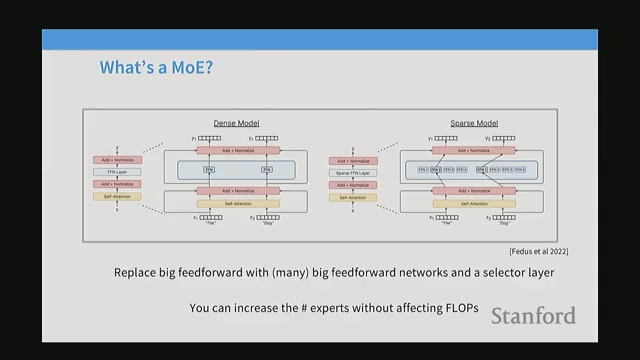
Mixture of Experts (MoE) is a cutting-edge model design widely used in today's top language models. It operates by incorporating many smaller components called experts, allowing the model to selectively activate only a few of these experts for each input. This approach enables models to have a large number of parameters while maintaining roughly the same computational cost.
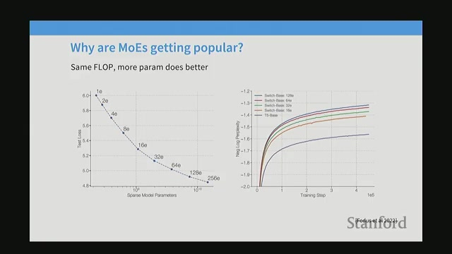
Many studies demonstrate that Mixture of Experts (MoE) models outperform dense models when given the same amount of computing power, measured in flops. Increasing the number of experts in these models generally leads to lower training loss and better model accuracy, making MoE a powerful approach in modern machine learning.
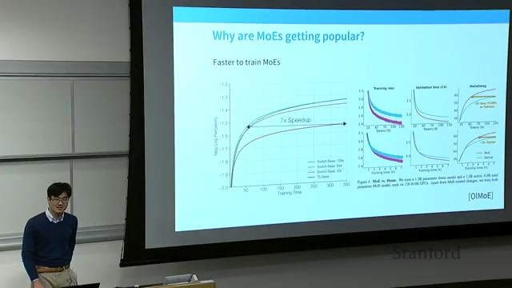
Mixture of Experts (MoE) models introduce additional complexity in their operation because data must be routed to different experts located on separate devices. This routing process is essential but challenging, as it involves directing each input token to the appropriate expert for processing.
Despite this complexity, MoE models unlock new avenues for accelerating model performance by distributing workloads across multiple devices.
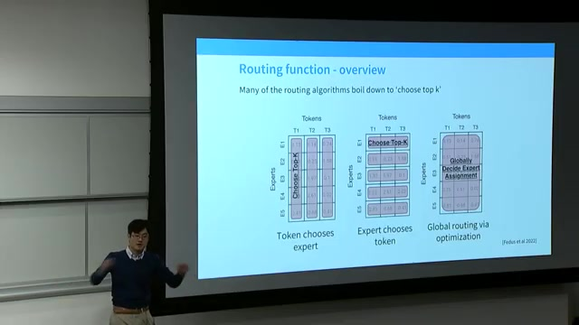
Mixture of Experts (MoE) architecture involves duplicating the feed-forward layers into multiple expert copies. A router then selects the top K experts to process each token. This routing function evaluates how well a token matches each expert and chooses the best matches accordingly.
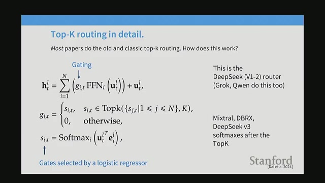
In modern routing algorithms, the token choice top K routing method stands out as the primary approach. However, there are several alternative strategies worth noting, including expert choice routing and global assignment. Interestingly, even a seemingly simple method like using a random hashing function to assign tokens to experts can lead to noticeable improvements in model performance.
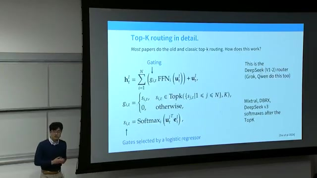
The router operates by computing compatibility scores between token representations and learned expert vectors. It then selects the top experts based on these scores using a softmax normalization. Finally, it gates the outputs from these selected experts to combine them effectively.
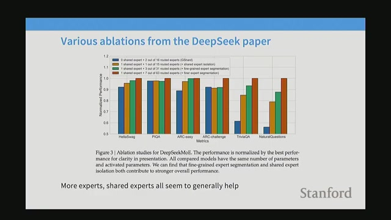
Designing effective routing functions involves a careful balance between simplicity, efficiency, and learnability. While it might seem intuitive that more complex routers would yield better results, in practice, increased complexity often leads to training difficulties without clear performance gains.
Several architectural choices directly impact the stability and performance of routing mechanisms, making design decisions critical for success.
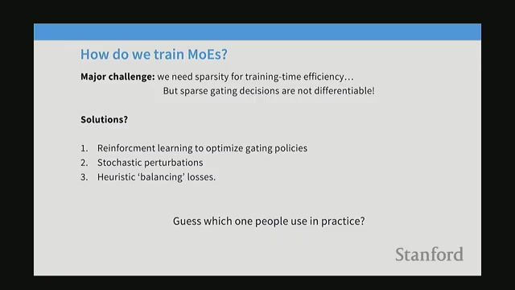
Mixture of Experts (MoE) models leverage a combination of shared experts and fine-grained experts to optimize performance and scalability.
In summary, the strategic integration of shared and fine-grained experts enables MoE models to scale efficiently while maintaining strong performance, making this approach a powerful tool in modern machine learning.
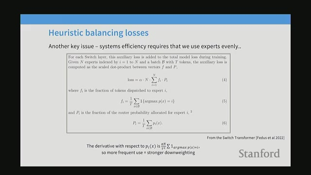
Recent Mixture of Experts (MoE) models typically employ dozens to hundreds of experts in total, but only a small subset of these experts are activated per token. This design enables models to scale efficiently while managing computational costs.
One important characteristic is that fine-grained experts are generally smaller than the dense Feed-Forward Network (FFN) layers found in traditional architectures. This allows for a large number of experts to coexist without drastically increasing the floating point operations per second (FLOPS).
Training Mixture of Experts (MoE) models presents a unique challenge: the router, responsible for directing tokens to experts, can easily collapse by sending most tokens to just a few experts. This behavior wastes the capacity of many experts, leading to inefficient training and suboptimal model performance.
To address this, specialized loss functions are introduced during training to encourage an even distribution of tokens across all experts and devices.
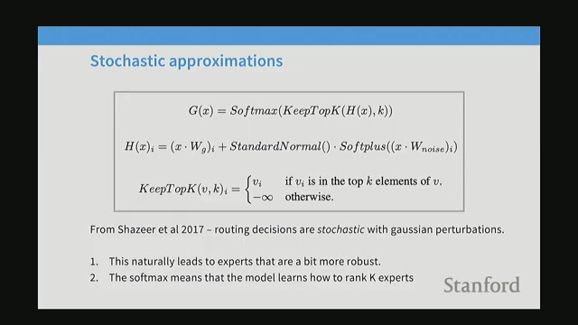
Training routing mechanisms involves several strategies, each with unique benefits and challenges. The main approaches include reinforcement learning (RL), injecting noise for exploration, and heuristic balancing losses. While RL and stochastic methods offer theoretical advantages, in practice, heuristics dominate due to their simplicity and stability.
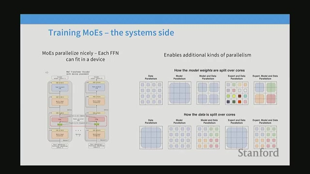
Mixture of Experts (MoE) introduces an innovative approach to parallelizing models by distributing experts across multiple devices. Instead of processing all tokens through every expert, MoE routes tokens only to the active experts and then recombines their outputs. This strategy enables efficient management of large-scale models by leveraging the full potential of available hardware.
Mixture of Experts (MoE) models present unique challenges during training and fine-tuning due to issues with instability and the risk of overfitting. Successfully addressing these challenges requires a combination of careful techniques and architectural decisions.
In summary, addressing the instability and overfitting risks in MoE models involves a blend of precise computations, loss function design, data scale, and architectural strategies. These efforts are crucial for unlocking the full potential of MoE architectures in real-world applications.
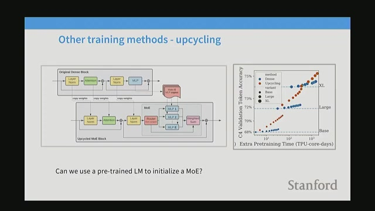
Upcycling is an innovative training method where a pre-trained dense model is transformed into a Mixture of Experts (MoE) by copying it into multiple experts with slight modifications. This approach not only saves significant training time but also leverages the strengths of existing models to enhance performance.
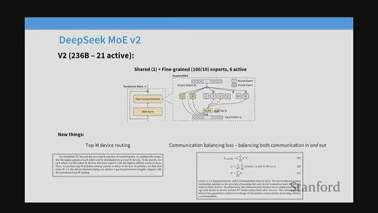
The Deepseek series represents a significant evolution in Mixture of Experts (MoE) language model architectures developed in China. While the core architecture has largely remained consistent, focusing on top K routing, each iteration introduces important innovations in expert configurations, balancing techniques, and system efficiency.
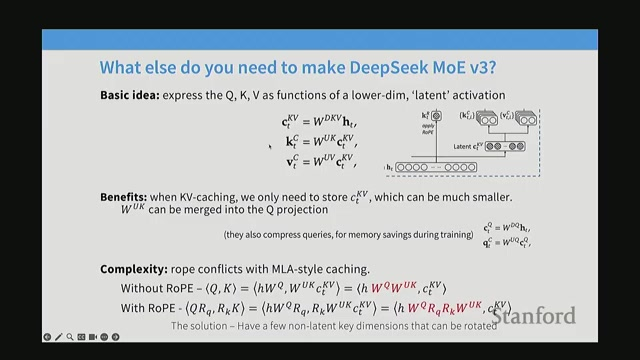
Deepseek V3 introduces several advanced features designed to optimize attention computation and improve prediction efficiency. A central innovation is the projection of queries and keys into smaller dimensional spaces, which significantly reduces memory usage and computational costs.
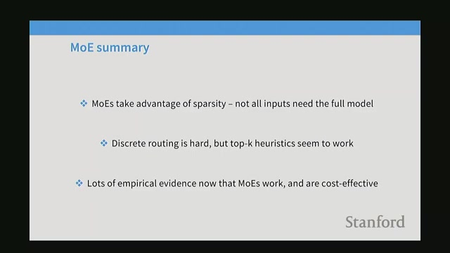
Mixture of Experts (MoE) models enable the creation of very large models with numerous parameters while keeping computational costs manageable by selectively activating only certain experts. This selective activation is key to their efficiency.
The main challenge lies in optimizing discrete routing decisions—deciding which experts to activate for each input. Despite this difficulty, heuristic approaches combined with effective system integration have made MoE models highly effective and cost-efficient in practice.
Generated automatically from lecture transcript and video analysis.